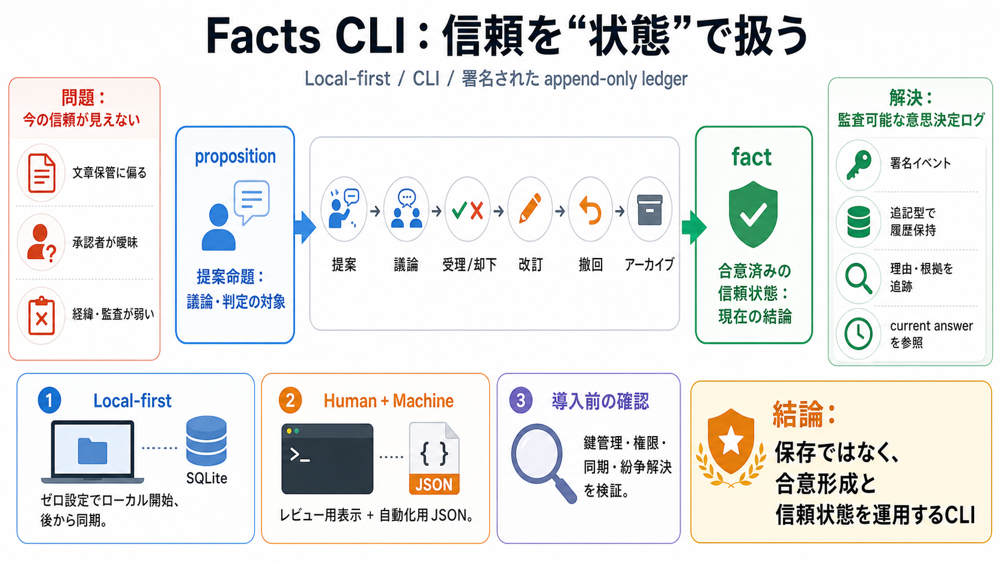

GitHub - contentauth/c2pa-rs: Rust SDK for the core C2PA (Coalition for Content Provenance and Authenticity) specification · GitHub
| Name | Name | Last commit message | Last commit date | --- --- | | Latest commit History1,734 Commits 1,734 Commit…

Facts CLIは、知識を単に保存せず「受理された命題（fact）」として運用し、成立過程まで監査可能にするローカルファーストCLIです。
多くのナレッジ管理は「何が書かれているか」は得意でも、「いま信頼されている結論が何か／誰がどう決めたか」は設計しにくいです（authority・history・auditability）。
proposition（提案命題）は真偽の判定対象になりうる一方、fact（事実）はワークフローの結果として“信頼される命題”になります。
知識の更新は単なる上書きではなく、受理／却下／改訂／撤回／アーカイブの一次クラス操作として残し、理由も追跡できるようにします。
署名されたappend-only ledgerに不変のイベントとして残すことで、著者性・順序・監査履歴を保持する方向性が示されています。
ゼロ設定のローカルデータストア（例：SQLite）を用意し、必要に応じてリモート同期やミラーリングへ拡張できる設計思想です。
ターミナルに人間が読める出力を出しつつ、JSON出力も提供して、レビューにも自動化にも使えることを示しています。
改訂・撤回・競合・解決をワークフローとして扱うため、「何が書かれたか」ではなく「どう合意されたか」を責任を持って運用できます。
この入力はREADME抜粋に相当し、署名方式、権限モデル、紛争解決アルゴリズム、同期時の挙動、データモデルの厳密さ、性能指標が読み取れません。
“factは合意の結果”という区別と、“受理/却下などの操作が意思決定の根拠”になる、という説明がFAQの中心です。
コンセプトは強力で、特にproposition/fact分離と履歴を一次クラスにする点は意思決定に向きます。一方で“信頼できる”を裏付ける鍵・権限・同期・検証の詳細確認が必要です。
Facts CLIは「監査可能な意思決定ログ」を狙う設計として有望です。導入前に、facts/sdkの仕様で署名・権限・同期・整合性検証・紛争解決を具体確認するのが推奨です。
| Name | Name | Last commit message | Last commit date | --- --- | | Latest commit History1,734 Commits 1,734 Commit…
The first step in creating a consensus engine with the Rust SDK is to implement the Engine trait: [...] Once the consens…
v0.4.0 800 #web-api #recorder #open-talk #routes #back-end #### equilibrium A framework for creating distributed c…
Open in Claude%20too.%20End%20by%20asking%20me%20what%20I'd%20like%20to%20know%20%2F%20do%20re%20https%3A%2F%2Faptos.dev…
| spl-memo-interface | Interact with Memo program | View | Source | | spl-token-metadata-interface | Interact with Token…